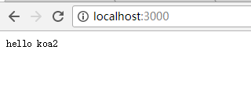

koa2 快速开始
环境准备
- 因为node.js v7.6.0开始完全支持async/await，不需要加flag，所以node.js环境都要7.6.0以上
- node.js环境 版本v7.6以上
- 直接安装node.js 7.6：node.js官网地址https://nodejs.org
- nvm管理多版本node.js：可以用nvm 进行node版本进行管理
- Mac系统安装nvm https://github.com/creationix/nvm#manual-install
- windows系统安装nvm https://github.com/coreybutler/nvm-windows
- Ubuntu系统安装nvm https://github.com/creationix/nvm
- npm 版本3.x以上
快速开始
安装koa2
# 初始化package.json
npm init
# 安装koa2
npm install koa
hello world 代码
const Koa = require('koa')
const app = new Koa()
app.use( async ( ctx ) => {
ctx.body = 'hello koa2'
})
app.listen(3000)
console.log('[demo] start-quick is starting at port 3000')
启动demo
由于koa2是基于async/await操作中间件，目前node.js 7.x的harmony模式下才能使用，所以启动的时的脚本如下：
node index.js
访问http:localhost:3000，效果如下
